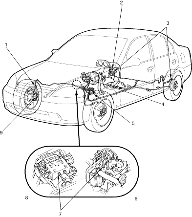

|
- BRAKE LINE-to-BRAKE HOSE
15 Nm (1.5 kgf/m, 11 lbf/ft)
- BRAKE LINE-to-BRAKE HOSE
15 Nm (1.5 kgf/m, 11 lbf/ft)
- BRAKE LINE-to-WHEEL CYLINDER
15 Nm (1.5 kgf/m, 11 lbf/ft)
BLEED SCREW
7 Nm (0.7 kgf/m, 5 lbf/ft)
- MASTER CYLINDER-to-BRAKE LINE
15 Nm (1.5 kgf/m, 11 lbf/ft)
- PROPORTIONING CONTROL VALVE-to-BRAKE LINE
15 Nm (1.5 kgf/m, 11 lbf/ft)
- On Vehicles Manufactured in Suzuka Plant
- ABS MODULATOR UNIT-to-BRAKE LINE
15 Nm (1.5 kgf/m, 11 lbf/ft)
- On Vehicles Manufactured in Other Plants
- BRAKE HOSE-to-CALLIPER, (BANJO BOLT)
34 Nm (3.5 kgf/m, 25 lbf/ft)
BLEED SCREW
9 Nm (0.9 kgf/m, 7 lbf/ft)
|